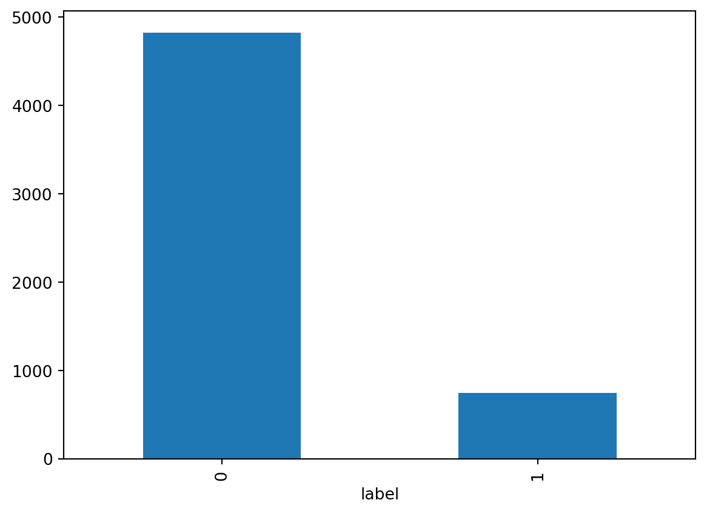
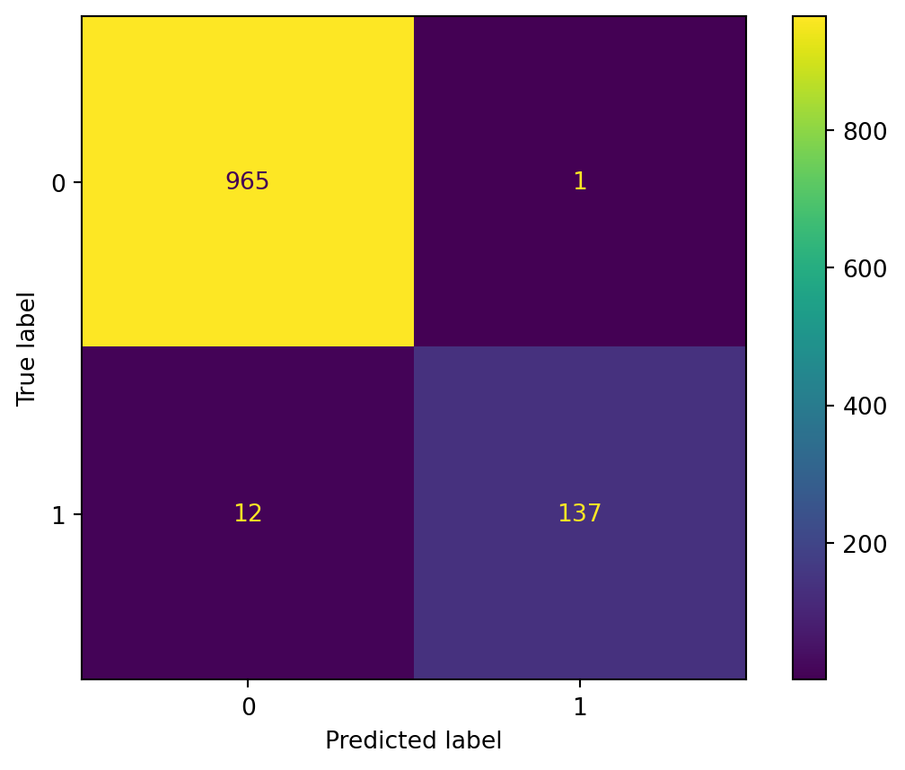
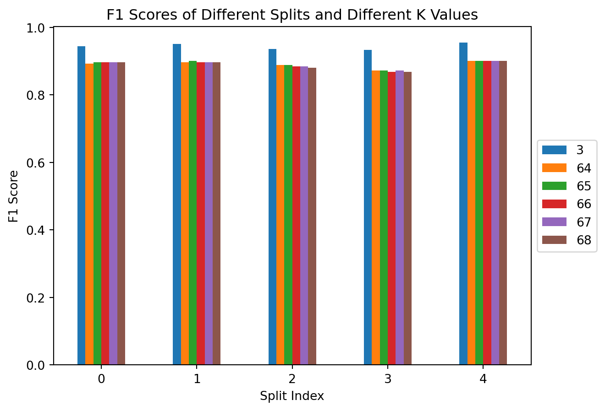
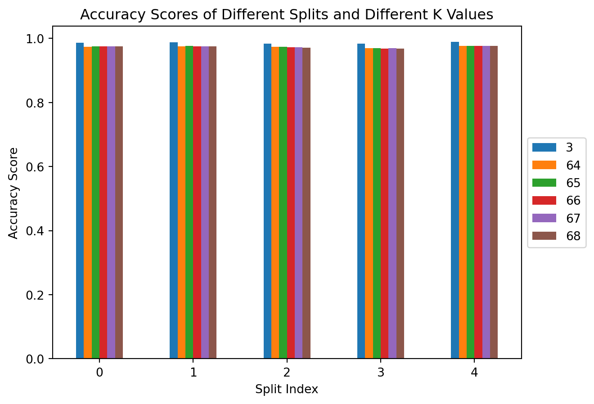

import gzip as gz
def gzip_metric(x1, x2):
Cx1 = len(gz.compress(x1.encode()))
Cx2 = len(gz.compress(x2.encode()))
x1x2 = " ".join([x1, x2])
Cx1x2 = len(gz.compress(x1x2.encode()))
ncd = (Cx1x2 - min(Cx1, Cx2)) / max(Cx1, Cx2)
return ncdCompression Is All You Need
Introduction
Neural networks (NN), deep learning (DL), and natural language processing (NLP) are all the rage today, and not without reason. In 2017, Google published “Attention Is All You Need” [1]. This paper presented the transformer architecture, which would later be used in a large variety of NLP models such as Google’s BERT and OpenAI’s GPT, which use transformers within their architecture.
Transformer architectures show great promise as they tend to be more parallelizable, require less time to train, and tend to be of higher quality [1]. However, neural networks, especially deep neural networks, tend to be computationally expensive and require large datasets to train. Thus, a team from the University of Waterloo proposed an alternative method for classifying text using a GZIP compressor and the K-Nearest Neighbor clustering algorithm.
The team demonstrated the viability of the method on a variety of datasets, testing the accuracy compared to non-pretrained datasets. As it turns out, their model is able to compete with the larger models and was even capable of outperforming BERT in some cases.
In the following blog post, I plan to try and recreate the said model on a different dataset to see how accurate the model is and to learn to apply it myself. Specifically, I want to apply the model to the most classic example of outlier detection - spam or ham!
Implementing the algorithm
The algorithm is simple and consists of KNN as the classification method and GZIP as the distance metric, but what does it mean?
What is KNN?
KNN (also known as KNN) is a simple and intuitive machine learning algorithm used for classification and regression tasks. It works by finding the K closest data points (neighbors) to a given input data point in a dataset and then classifying or predicting the target variable based on the majority class or average value of those K neighbors.
What is GZIP?
GZIP is a file compression utility that is typically used for compressing files to be transfered over network or for storage. You most likely have used GZIP before in order to do that. An interesting detail of the GZIP compression is that repetative texts will be compressed into smaller sizes than texts that are not repetative. This is due to the fact that the algorithm uses Huffman coding, which replaces the most repeated sequences with shorter sequences, and LZ77, which stores references to repeated sequnces instead of using the sequences themselves (think of it like having a variable assigned to sequence and then using that variable later instead of the sequence).
How do they fit together?
KNN can be used in order to classifiy different sentences. However, to classify something when using KNN we need a way to also measure the distance between two datapoints. This is where GZIP comes in. Since GZIP compresses repetative sequences into smaller sizes - similar sequences that are concatonated together will compress to smaller sizes as well. This allows us to formulate a distance metric based on how well a sequence is compressed.
Consider an example: We have sequences x1, x2, and x3. Assume that x1 and x2 are similar sequences while x3 is less similar. Let C(x, y) be our GZIP compressor. Then it follows that: \[ size(C(x1 + x2)) < size(C(x1 + x3)) \]
This is the intuition behind the method. We will first begin by implementing the metric.
Metric
The most basic implementation of the metric would look like this, but the keen eyed may notice that it could be optimized.
KNN
Normally, we would use an already existing library such as Scikit-Learn and simply import the KNN algorithm from there (neighbors.KNeighborsClassifier). However, when trying to do that, I run into an interesting problem. Turns out that Scikit’s KNeighborsClassifier does not operate with strings and expects the user to encode them beforehand. We do not want to encode these strings since we want our GZIP metric to interact with the strings directly. Luckily, KNN is simple to implement by hand and is also implemented in the paper.
import pandas as pd
import numpy as np
def knn_classify(known_df: pd.DataFrame, unknown_sr: pd.Series, k: int = 3):
knowns: np.ndarray = known_df.to_numpy(copy=True)
unknowns: np.ndarray = unknown_sr.to_numpy(copy=True)
predictions = []
for x1 in unknowns:
distances_from_x1: np.array = np.array(
[gzip_metric(x1, x2) for x2, _ in knowns]
)
sorted_idx = np.argsort(distances_from_x1)
top_k_classes = knowns[sorted_idx[:k], 1]
values, counts = np.unique(top_k_classes, return_counts=True)
predicted_class = values[np.argmax(counts)]
predictions.append(predicted_class)
return predictionsOptimization
As you have seen in the KNN section, x2 is computed multiple times for every x1. Therefore, when we use the gzip metric, we unecessarily compress x1 multiple times, which is time-consuming. So, instead, we could precompute that value inside our knn_function and pass the precomputed value into our metric.
def improved_gzip_metric(Cx1, x1, x2):
Cx2 = len(gz.compress(x2.encode()))
x1x2 = " ".join([x1, x2])
Cx1x2 = len(gz.compress(x1x2.encode()))
ncd = (Cx1x2 - min(Cx1, Cx2)) / max(Cx1, Cx2)
return ncd
def improved_knn_classify(known_df: pd.DataFrame, unknown_sr: pd.Series, k: int = 3):
knowns: np.ndarray = known_df.to_numpy(copy=True)
unknowns: np.ndarray = unknown_sr.to_numpy(copy=True)
predictions = []
for x1 in unknowns:
Cx1 = len(gz.compress(x1.encode()))
distances_from_x1: np.array = np.array(
[improved_gzip_metric(Cx1, x1, x2) for x2, _ in knowns]
)
sorted_idx = np.argsort(distances_from_x1)
top_k_classes = knowns[sorted_idx[:k], 1]
values, counts = np.unique(top_k_classes, return_counts=True)
predicted_class = values[np.argmax(counts)]
predictions.append(predicted_class)
return predictionsSpam or Ham
The dataset I would like to look at was taken from kaggle and includes a collection of messages labeled as spam or not spam (also called ham).
Let’s take a quick look at the data using the pandas library.
Data Overview
# The dataset comes with a single file named train.csv. Interestingly, there is no test.csv.
df_spam = pd.read_csv("Spam_dataset/train.csv")
df_spam["sms"] = df_spam["sms"].values.astype("str")
df_spam.head()| sms | label | |
|---|---|---|
| 0 | Go until jurong point, crazy.. Available only ... | 0 |
| 1 | Ok lar... Joking wif u oni...\n | 0 |
| 2 | Free entry in 2 a wkly comp to win FA Cup fina... | 1 |
| 3 | U dun say so early hor... U c already then say... | 0 |
| 4 | Nah I don't think he goes to usf, he lives aro... | 0 |
You can see that the dataset is split into two columns. One containing the message, the second containing the label. Conviniently for us, the labels are already hot-encoded, so we do not need to go through the encoding step. Something to note, if the label is ‘0’ then the message is considered ham, if it is labled as ‘1’ the message is spam.
Let’s quickly look at the distribution of the data.
grouped_counts = df_spam.groupby("label").size()
grouped_counts.plot.bar(x="label")
grouped_countslabel
0 4827
1 747
dtype: int64
We can see that the overwhelming number of labels belong to ‘ham’. When we split this data into a train and test dataset, we will need to pay special attention that both of the labels are present in both the testing and training datasets. To do that we can use sklearn’s train_test_split.
from sklearn.model_selection import train_test_split
X = df_spam["sms"]
y = df_spam["label"]
X_train, X_test, y_train, y_test = train_test_split(X, y, test_size=0.2, stratify=y, random_state=42)
train_df = pd.concat([X_train, y_train], axis=1)
test_df = pd.concat([X_test, y_test], axis=1)Now that the data has been split, we can use the algorithm we built to try and classify the text messages.
Test Run
First let’s try the unoptimized algorithm.
y_bar_slow = knn_classify(train_df, X_test)This cell took 3 minutes and 50 seconds to execute on my system. Now, we will run the improved implementation.
y_bar = improved_knn_classify(train_df, X_test)y_bar == y_bar_slowTrueWe can see that the results are identical, yet the improved version runs faster. So, from now on, we will simply use the improved version. Let’s see how the model has performed.
from sklearn.metrics import accuracy_score
from sklearn.metrics import f1_score
from sklearn.metrics import confusion_matrix
from sklearn.metrics import ConfusionMatrixDisplay
conf_mat = confusion_matrix(y_test, y_bar)
ConfusionMatrixDisplay(conf_mat).plot()
print("f1:", f1_score(y_test, y_bar))
print("accuracy:", accuracy_score(y_test, y_bar))f1: 0.9547038327526132
accuracy: 0.9883408071748879
These results are pretty impressive. However, this could be a result of a particularly lucky split. We will now try to perform cross validation while also experimenting with different sizes of K.
Full test
First, need to consider the possible size of K. A good rule of thumb for KNN is to select a K that is equal to \(\sqrt(n)\), where \(n\) is the number of datapoints in the training set. We have 4459 data points in our training set. That means that our K should be approximately \(66\). We could try multiple K values as well. We can try a list of \(64, 65, 66, 67, 68\) since these values are in the vicinity of our rule of thumb and also \(3\), since we have recieved good results from it.
from sklearn.model_selection import StratifiedKFold
from multiprocess import Pool
f1_scores = []
accuracy_scores = []
Ks = [3, 64, 65, 66, 67, 68]
skf = StratifiedKFold(n_splits=5)
with Pool() as pool:
for train_idx, test_idx in skf.split(X, y):
train_df = df_spam.iloc[train_idx]
test_df = df_spam.iloc[test_idx]
args = [(train_df, test_df["sms"], K) for K in Ks]
y_bars = pool.starmap(improved_knn_classify, args)
accuracies = []
f1s = []
for y_bar in y_bars:
accuracies.append(accuracy_score(test_df["label"], y_bar))
f1s.append(f1_score(test_df["label"], y_bar))
accuracy_scores.append(accuracies)
f1_scores.append(f1s)You may notice that the above code uses a new 3rd party library names “multiprocess” (not to be confused with Python’s “multiprocessing” library). It is a fork of the “multiprocessing” built-in Python library that performs better in the Jupyter environment. We are using this library in order to be able to process multiple K values in parallel. Otherwise, this process would have taken significantly longer.
Now, lets save our metric results as dataframes for further processing.
f1_df = pd.DataFrame(f1_scores, columns=Ks)
accuracy_df = pd.DataFrame(accuracy_scores, columns=Ks)
print(f1_df)
print(accuracy_df) 3 64 65 66 67 68
0 0.944444 0.892989 0.897059 0.897059 0.897059 0.897059
1 0.951389 0.897059 0.901099 0.897059 0.897059 0.897059
2 0.936170 0.888889 0.888889 0.884758 0.884758 0.880597
3 0.932862 0.872180 0.872180 0.867925 0.872180 0.867925
4 0.954386 0.900369 0.900369 0.900369 0.900369 0.900369
3 64 65 66 67 68
0 0.985650 0.973991 0.974888 0.974888 0.974888 0.974888
1 0.987444 0.974888 0.975785 0.974888 0.974888 0.974888
2 0.983857 0.973094 0.973094 0.972197 0.972197 0.971300
3 0.982960 0.969507 0.969507 0.968610 0.969507 0.968610
4 0.988330 0.975763 0.975763 0.975763 0.975763 0.975763We can create a bar chart in order to understand the results a bit better. We will first look at the \(F1\) score.
ax = f1_df.plot.bar(rot=0, title="F1 Scores of Different Splits and Different K Values")
ax.legend(loc='center left',bbox_to_anchor=(1.0, 0.5))
ax.set_xlabel("Split Index")
ax.set_ylabel("F1 Score")Text(0, 0.5, 'F1 Score')
ax = accuracy_df.plot.bar(rot=0, title="Accuracy Scores of Different Splits and Different K Values")
ax.legend(loc='center left',bbox_to_anchor=(1.0, 0.5))
ax.set_xlabel("Split Index")
ax.set_ylabel("Accuracy Score")Text(0, 0.5, 'Accuracy Score')
From both of these plots we can see that there is no significant difference between different splits of the dataset. Additionally, there does not appear to be a significant difference in performance of the K values that are closest to our rule of thumb. However, turns out that a K value of \(3\) is significantly more profitable than the other K values. We can take a look at the average score for \(K=3\) for each metric below:
print("F1 Average:", f1_df[3].mean())
print("Accuracy Average:", accuracy_df[3].mean())F1 Average: 0.9438503403648584
Accuracy Average: 0.9856481310028903References
[1] A. Vaswani et al., “Attention is all you need,” arXiv.org, https://arxiv.org/abs/1706.03762. [2] Z. Jiang et al., “‘low-resource’ text classification: A parameter-free classification method with compressors,” ACL Anthology, https://aclanthology.org/2023.findings-acl.426/.